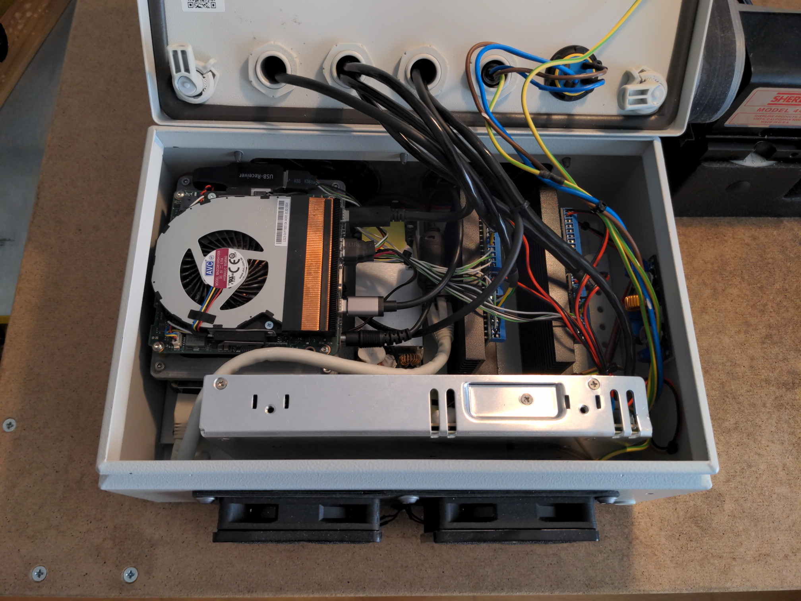
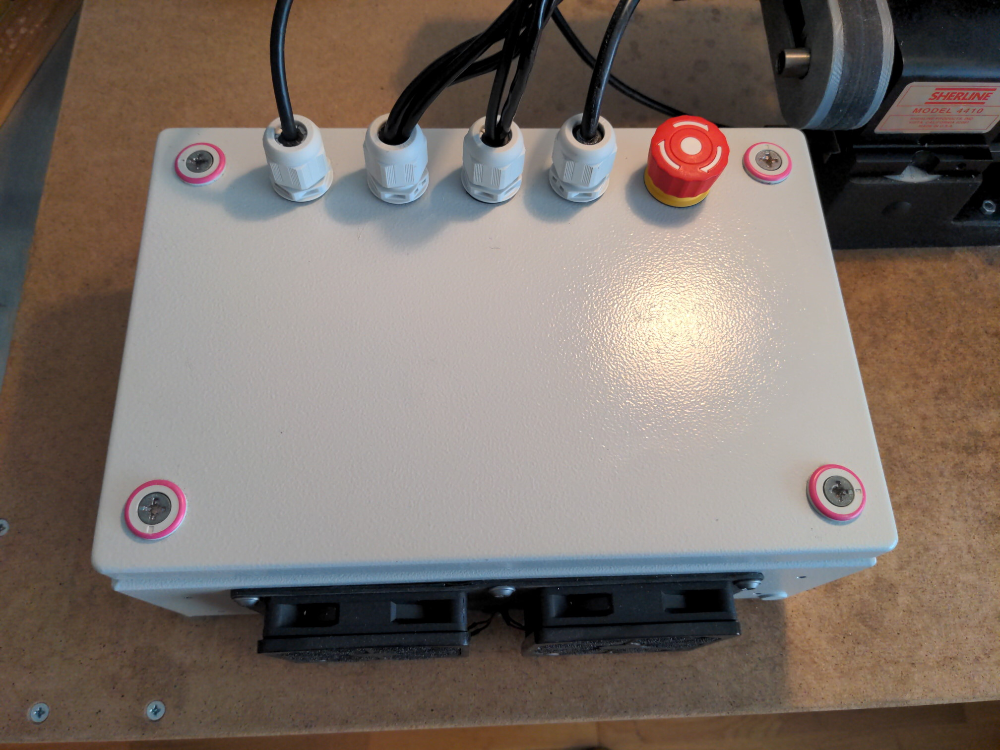
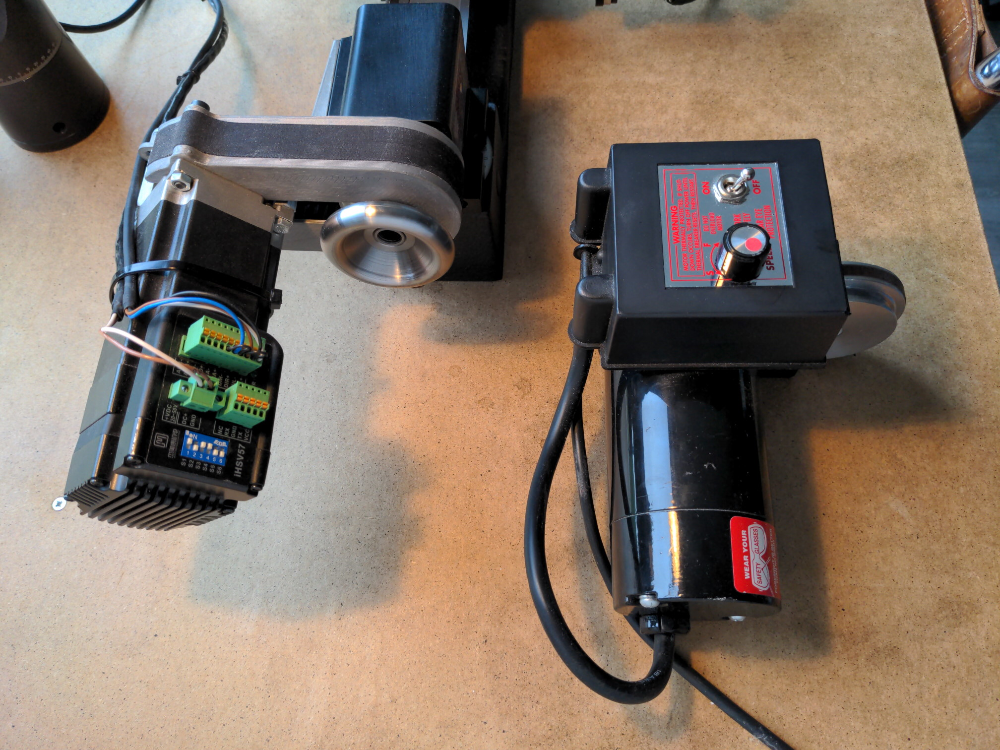
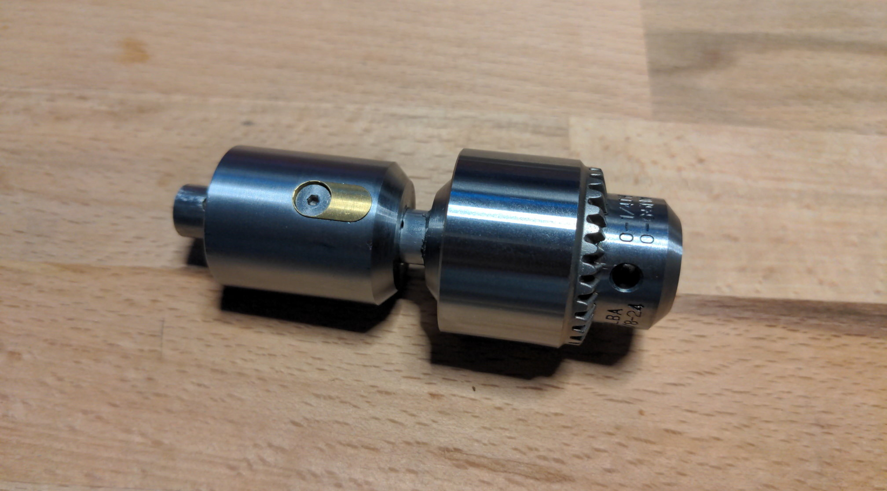
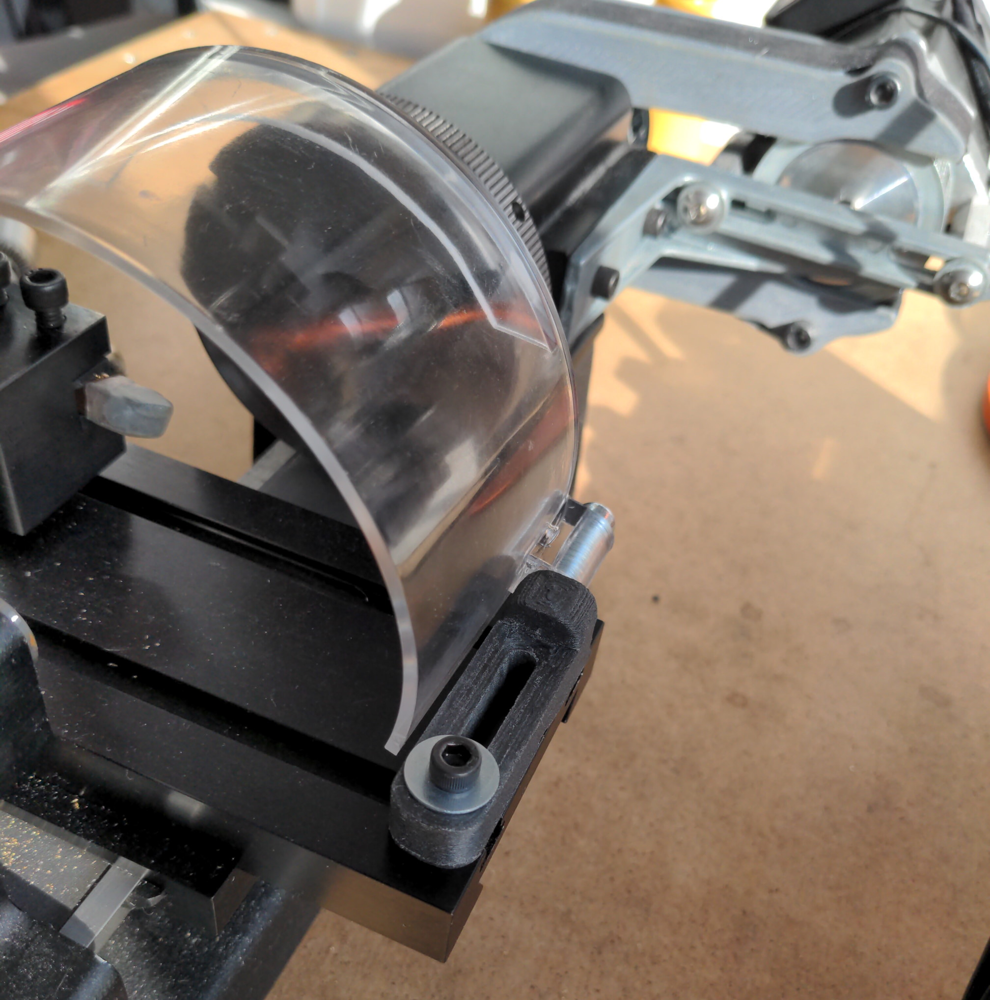

In 2021 I expanded my little workshop to be able to do small-scale metalworking. I intended on buying a manual lathe/mill combo from Sherline, so I could save some space and get two machines in one. (Un)fortunately they sent me the CNC-ready version instead of the manual one. We worked things out in the end, but I didn't want to buy their CNC package, so instead I used the opportunity to build my own CNC control box. This sent me down a deep rabbit hole of trying to understand how to set up the control software LinuxCNC. Nowadays the machine works great (after replacing many old AliExpress components..), and I even got around coding some custom macros and UI elements to make my life easier. Like one to turn on/off certain axes so that they can be moved manually.
 There are many good reasons to have position control on the spindle of a lathe. My main ones were to be able to manufacture spring mandrels to make my own springs (for my master’s project), and so that I could turn custom screw threads with ease. For these reasons I replaced the stock spindle motor with a servo motor.
I'm a big fan of Sherline because of their wide range of accessories for their machines. By now I have most of the ones that I find useful, but some they do not make. I always wanted to tap holes with the machine in its mill configuration, but that's difficult without a quill, so I made a tapping attachment by modifying some existing accessories. Also very bothersome were the chips flying everywhere. Sherline does sell a chip guard, but it attaches to the headstock. I modified it such that it attaches on the crosslide and thus follows the cutter, making it much more effective.
 